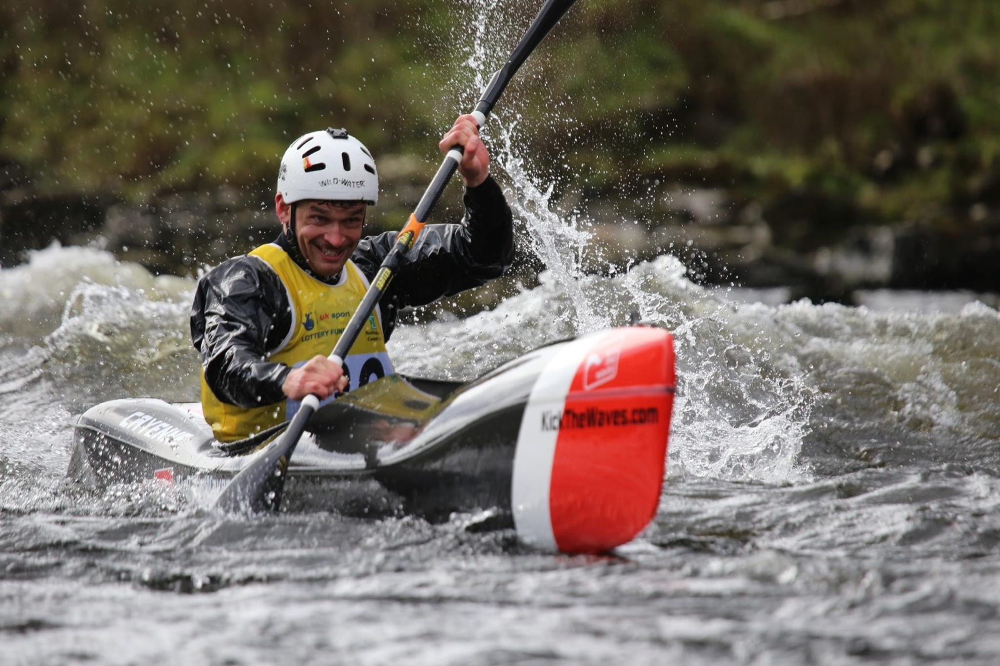
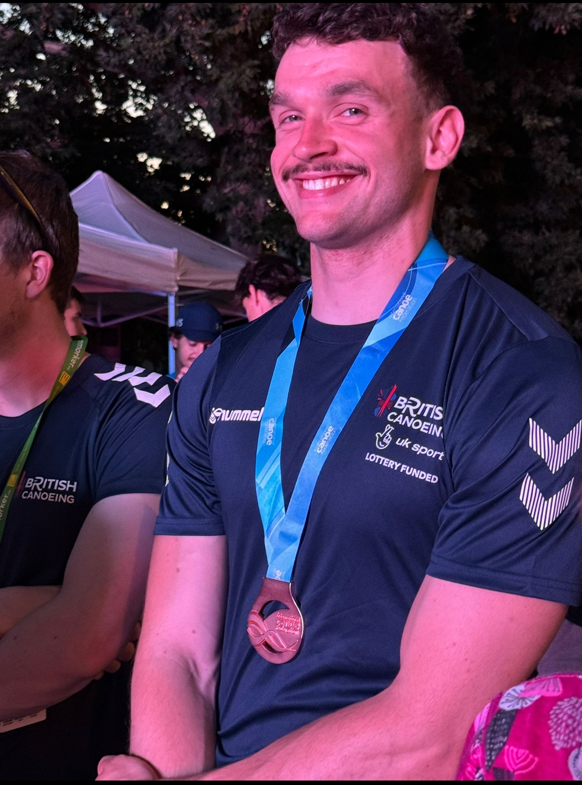

Connecting people and systems
Translating operational requirements into a CRM and operating structure that supports teams, customer journeys and reliable reporting.
I help growing organisations fix the systems, reporting and processes that make delivery harder than it should be.
See where I help ↘The brief is not always obvious at the start. It usually begins with one of these situations.
Clarifying requirements, customer journeys, ownership and reporting before improving the system around them.
Bringing operational information together so leaders and delivery teams can work from a clearer, more reliable view.
Creating practical structures for information, decisions and handovers across organisations and delivery partners.
Establishing the processes, systems and operating routines needed to move from early delivery into steady operation.
Technology rarely fixes an operational problem on its own. I look at the people, process, information and tools together, then focus effort where it will make a practical difference.
Hover or select an area to explore it.
The strongest changes connect people, process, data and technology rather than treating one in isolation.
Translating operational requirements into a CRM and operating structure that supports teams, customer journeys and reliable reporting.
Bringing programme and operational information together to create a clearer view of delivery, risk and progress.
Creating practical information structures across projects, properties, customers and delivery partners.
Supporting the early delivery of a new programme with clearer systems, reporting and operating routines.
Sector experience
Sustainability, energy efficiency, property, retrofit and EV infrastructure.
01–02 / 02
Alex combines exceptional technical knowledge with a real ability to turn complex information into clear, practical advice. He challenges our thinking constructively and brings ideas that make a meaningful difference.
Alex has been fantastic when working alongside the developers, helping turn our ideas and concepts into reality. He takes the time to understand what we want to achieve, communicates effectively, and goes above and beyond to make sure things come together as planned.

© Pete Atkinson
Alongside consultancy, I represent Great Britain in wildwater kayaking. I won a World Cup bronze medal in Veles, Macedonia in 2024.
Elite sport taught me to understand the detail, prepare properly and stay focused on the things that make a meaningful difference. That is the same mindset I bring to complicated operational work.
Work with me →A clear brief, direct communication and support that fits the work.
The person you speak to is the person doing the work. I stay close to the detail and the people involved.
Advice needs to hold up in practice. I focus on changes your team can understand, use and maintain.
A defined piece of work, support through a busy period, or a longer-term role alongside your team.